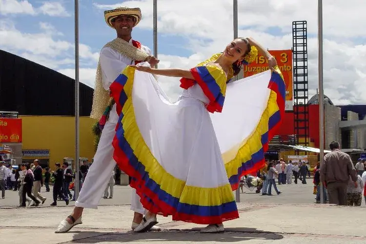
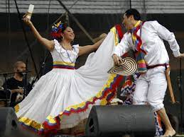

¿Qué es el baile?
El baile es una forma de arte en la que el cuerpo se mueve de manera rítmica, generalmente al compás de la música. Es una manifestación cultural presente en todas las civilizaciones.
Mira este video explicativo: ¿Qué es el baile?

Estilos de Baile
- Ballet: Técnica clásica y elegancia refinada.
- Salsa: Ritmos latinos llenos de energía y sabor.
- Hip-Hop: Expresión urbana y dinámica.
- Danza Contemporánea: Movimiento libre y emocional.
- Tango: Pasión y precisión en pareja.


Beneficios del Baile
El baile no solo entretiene, también aporta salud física y mental:
- Mejora la coordinación
- Reduce el estrés
- Aumenta la flexibilidad
- Fomenta la confianza personal
Lee más en este artículo: Beneficios de bailar (en inglés)
Breve Historia del Baile
Desde danzas rituales hasta competencias modernas, el baile ha acompañado la historia humana como expresión de identidad y emoción.
Explora esta línea del tiempo del baile: Evolución del baile
